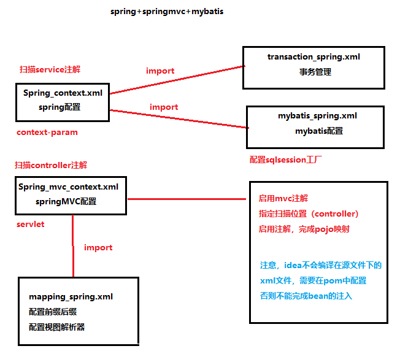

Spring ：是一个开源框架，起初是为解决企业应用开发的复杂性而创建的，但是现在已经不止
企业级应用开发，Spring的核心就是提供了一个轻量级的控制反转和面向切面编程。
SPring MVC：可以理解为Spring和MVC结合的一种开发结构，MVC是一种将数据业务，显示逻辑，
和控制逻辑进行分层的设计模式，业内常见的MVC开发框架有Struts1和Struts2等、、
Spring MVC是用于web开发的通用框架
Spring Boot：是用来简化Spring框架应用初始化搭建以及开发的全新框架，比如自动化配置省去
了大量的繁琐配置文件，因此SpringBoot可以理解为，一个通过简化配置文件来服务于
框架的框架。
- 创建独立的Spring程序，简化maven配置，快速构建Spring项目。
- 一个简单的SpringBoot工程是不需要在pom里面手动添加配。
- 在SpringBoot创建时，会自动创建BootdemoApplication启动类。代表着本工程项目和
服务的启动加载，在SpringBoot中嵌入有tomcat服务器，无需手动部署war文件
Mybatis：基于java的持久层框架
Spring Cloud：是分布式微服务架构下的一站式解决方案，是各个微服务架构落地技术的集合体，
俗称微服务栈解决方案。
SpringBoot与SpringCloud之间的关系：
SpringCloud偏向宏观，SpringBoot偏向微观，如果将SpringBoot比作医院里的一个个科室
那么SpringCloud则是将SpringBoot组合起来的综合医院。
SpringBoot可以单独使用，不依赖与SpringCloud，而SpringCloud必然依赖与SpringBoot。
SpringBoot专注于快速开发单个个体的微服务，而SpringCloud是关注全局的微服务协调整
理治理框架，他将SpringBoot开发的单个个体集合管理，为各个微服务之间提供配置管理，服务
发现，断路器，路由，微代理，事件总线，全局锁，决策竞选，分布式会话等等集成服务为什么要在web.xml里面建立监听器？
-- listener告诉容器，启动的时候建立spring容器，并加载我们在context—param
中配置的contextConfigLocaltion中对应的配置文件的bean。
一定要配置么？如果不配置，springMVC容器中的bean使用spring容器中的bean
，两个容器之间的bean没有关联，就不会报错。可以在springmvc.xml中import
spring.xml，启动不会报错 <import resource="spring.xml"/>
- 使用spring容器的目的，就是为了区分哪些bean是可以脱离web环境使用的。
springmvc容器是在DispatcherServlet初始化的时候创建的。 spring容器的启动时先于springmvc的，所以，spring容器不知道springmvc容
器的存在的，也就是父容器无法使用子容器的bean。
父容器初始化之后，会将自己放到servletcontext的属性中。
servletContext.setAttribute(WebApplicationContext.ROOT_WEB_APPLICATION_CO
NTEXT_ATTRIBUTE, this.context);
那么，子容器在初始化之后就能得到父容器的存在，子容器就可以使用父容器
的bean。 servlet：代表的容器是springmvc的子容器，DispatcherServlet是前端控制
器，该容器专门为前端监听请求的时候使用，就是说当接收URL请求的时候会引用
springmvc容器内的对象处理。
context-param：代表spring本身的容器，springmvc可以理解为继承该容器的
子容器，spring是父类容器，跟继承一样，子容器可以使用父容器的对象，但是父
容器不能使用子类的对象。所以出现两个上下文并不冲突，但是注意，不要重复注
入。
由于监听器的原因，服务器会先初始化spring容器 之后再初始化springmvc。
springmvc是管理controller对象的容器，spring就是管理servlet和dao的容器
，所以在springmvc里面扫描的是controller，在spring里面扫描的是service和dao
<resources>
<resource>
<directory>src/main/java</directory>
<includes>
<include>**/*.xml</include>
</includes>
<filtering>true</filtering>
</resource>
<resource>
<directory>src/main/resources</directory>
<filtering>true</filtering>
</resource>
</resources>